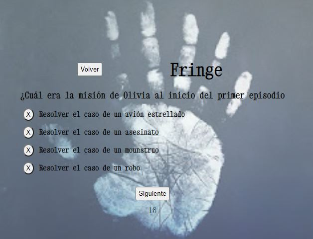

Sobre mi

Desarrolladora front-end, la programación ha dado un nuevo empujón a mi vida y me encanta.
Antes, estudié terapia ocupacional vinculada a la educación especial y su rehabilitación, esto me ha ayudado a tener gran aptitud para trabajar en equipos multidisciplinares teniendo en cuenta la empatía y adaptación a diferentes contextos.
He coordinado equipos pequeños, tengo buena capacidad para la organización y la planificación de objetivos así como para la persecución de los mismos, a través de un constante trabajo.
Proyectos
Quiz
Popcorcon and TV

Piedra, papel, tijera,
lagarto, Spock

Rick and Morty

Find the treasure

Pokemon